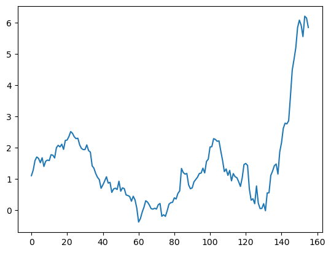

import pandas as pdtxt = """year;country;measure
2018;"france";950.0
2019;"france";960.0
2020;"france";1000.0
2018;"usa";2500.0
2019;"usa";2150.0
2020;"usa";2300.0
"""
open('annoying_dummy_file.csv','w').write(txt) # we wri136df = pd.read_csv("annoying_dummy_file.csv",sep=";")df| year | country | measure | |
|---|---|---|---|
| 0 | 2018 | france | 950.0 |
| 1 | 2019 | france | 960.0 |
| 2 | 2020 | france | 1000.0 |
| 3 | 2018 | usa | 2500.0 |
| 4 | 2019 | usa | 2150.0 |
| 5 | 2020 | usa | 2300.0 |
!pip install vega_datasetsCollecting vega_datasets
Downloading vega_datasets-0.9.0-py3-none-any.whl (210 kB)
━━━━━━━━━━━━━━━━━━━━━━━━━━━━━━━━━━━━━━━ 210.8/210.8 kB 5.5 MB/s eta 0:00:00[31m8.6 MB/s eta 0:00:01
Requirement already satisfied: pandas in /home/pablo/.local/opt/mambaforge/lib/python3.10/site-packages (from vega_datasets) (1.4.4)
Requirement already satisfied: python-dateutil>=2.8.1 in /home/pablo/.local/opt/mambaforge/lib/python3.10/site-packages (from pandas->vega_datasets) (2.8.2)
Requirement already satisfied: pytz>=2020.1 in /home/pablo/.local/opt/mambaforge/lib/python3.10/site-packages (from pandas->vega_datasets) (2022.2.1)
Requirement already satisfied: numpy>=1.21.0 in /home/pablo/.local/opt/mambaforge/lib/python3.10/site-packages (from pandas->vega_datasets) (1.22.4)
Requirement already satisfied: six>=1.5 in /home/pablo/.local/opt/mambaforge/lib/python3.10/site-packages (from python-dateutil>=2.8.1->pandas->vega_datasets) (1.16.0)
Installing collected packages: vega_datasets
Successfully installed vega_datasets-0.9.0import vega_datasets
df = vega_datasets.data('iris')
df| sepalLength | sepalWidth | petalLength | petalWidth | species | |
|---|---|---|---|---|---|
| 0 | 5.1 | 3.5 | 1.4 | 0.2 | setosa |
| 1 | 4.9 | 3.0 | 1.4 | 0.2 | setosa |
| 2 | 4.7 | 3.2 | 1.3 | 0.2 | setosa |
| 3 | 4.6 | 3.1 | 1.5 | 0.2 | setosa |
| 4 | 5.0 | 3.6 | 1.4 | 0.2 | setosa |
| ... | ... | ... | ... | ... | ... |
| 145 | 6.7 | 3.0 | 5.2 | 2.3 | virginica |
| 146 | 6.3 | 2.5 | 5.0 | 1.9 | virginica |
| 147 | 6.5 | 3.0 | 5.2 | 2.0 | virginica |
| 148 | 6.2 | 3.4 | 5.4 | 2.3 | virginica |
| 149 | 5.9 | 3.0 | 5.1 | 1.8 | virginica |
150 rows × 5 columns
!pip install dbnomicsCollecting dbnomics
Downloading DBnomics-1.2.3-py3-none-any.whl (20 kB)
Requirement already satisfied: requests>=2.18.4 in /home/pablo/.local/opt/mambaforge/lib/python3.10/site-packages (from dbnomics) (2.28.1)
Requirement already satisfied: pandas>=0.21 in /home/pablo/.local/opt/mambaforge/lib/python3.10/site-packages (from dbnomics) (1.4.4)
Requirement already satisfied: python-dateutil>=2.8.1 in /home/pablo/.local/opt/mambaforge/lib/python3.10/site-packages (from pandas>=0.21->dbnomics) (2.8.2)
Requirement already satisfied: pytz>=2020.1 in /home/pablo/.local/opt/mambaforge/lib/python3.10/site-packages (from pandas>=0.21->dbnomics) (2022.2.1)
Requirement already satisfied: numpy>=1.21.0 in /home/pablo/.local/opt/mambaforge/lib/python3.10/site-packages (from pandas>=0.21->dbnomics) (1.22.4)
Requirement already satisfied: charset-normalizer<3,>=2 in /home/pablo/.local/opt/mambaforge/lib/python3.10/site-packages (from requests>=2.18.4->dbnomics) (2.1.1)
Requirement already satisfied: urllib3<1.27,>=1.21.1 in /home/pablo/.local/opt/mambaforge/lib/python3.10/site-packages (from requests>=2.18.4->dbnomics) (1.26.11)
Requirement already satisfied: idna<4,>=2.5 in /home/pablo/.local/opt/mambaforge/lib/python3.10/site-packages (from requests>=2.18.4->dbnomics) (3.3)
Requirement already satisfied: certifi>=2017.4.17 in /home/pablo/.local/opt/mambaforge/lib/python3.10/site-packages (from requests>=2.18.4->dbnomics) (2022.9.24)
Requirement already satisfied: six>=1.5 in /home/pablo/.local/opt/mambaforge/lib/python3.10/site-packages (from python-dateutil>=2.8.1->pandas>=0.21->dbnomics) (1.16.0)
Installing collected packages: dbnomics
Successfully installed dbnomics-1.2.3import dbnomicsdf = dbnomics.fetch_series("OECD/MEI/FRA.CPALTT01.CTGY.M")df['value'].plot()<AxesSubplot: >